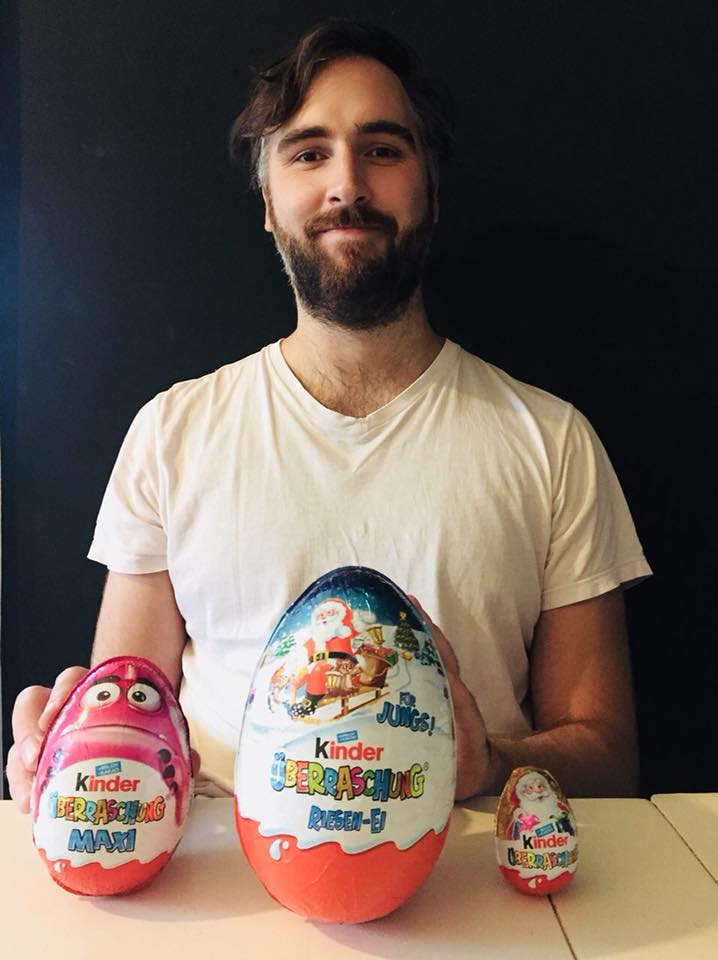

Contact
- Email: robert.anton.vandermeulen@gmail.com
- Bluesky: Profile
- Google Scholar: Profile
- ResearchGate: Profile
- ORCID: 0000-0001-6863-7006
- DBLP: 137/3375
Short Bio
I am a machine learning researcher based in Berlin. My primary research focuses are deep anomaly detection and non‑parametric density estimation. My work on one‑class deep anomaly detection was developed during my time at TU Kaiserslautern and Humboldt‑Universität zu Berlin. In non‑parametric density estimation I study factorized density estimates, which can act as non‑parametric mixture models or as a general tool for improving density estimates.
Born and raised in the Pacific Northwest (USA), I completed my graduate work at the University of Michigan before moving to Berlin for my postgraduate studies.

News
- May 2025: Website Design Update!
- May 2025: Paper accepted to ICML
- November 2024: New preprint: Dimension‑independent rates for structured neural density estimation
- September 2024: Paper accepted to NeurIPS
- January 2024: Paper accepted to ICLR
- September 2023: Gave talk at the National Physics Laboratory UK
- September 2023: Paper accepted to NeurIPS
- September 2023: New preprint
- May 2023: Gave talk at the University of Chicago Machine Learning Seminar
- April 2023: New preprint
- April 2023: Gave talk at the Weierstrass Institute
- March 2023: Paper accepted to ICLR
- February 2023: Gave talk at the Prague Computer Science Seminar
- February 2023: Gave talk at Information Theory and Applications
- December 2022: Received Google Collabs grant with Lukas Muttenthaler and Simon Kornblith
- November 2022: Paper accepted to TMLR
- November 2022: Paper accepted to NeurIPS
- May 2022: First cognitive science work! VICE: Variational Interpretable Concept Embeddings
- February 2022: First website update since May 2021
- September 2021: Paper accepted to NeurIPS
- September 2021: Invited talk at Kyung Hee University
- July 2021: Invited talk at Hawai‘i Data Science Institute
- July 2021: Presented paper at ICML: Workshop on Uncertainty and Robustness in Deep Learning
- May 2021: Paper accepted to ICML
- April 2021: PC (review committee) for three anomaly detection workshops: [KDD: ANDEA], [KDD: ODD], [IJCAI: AI4AN]
- April 2021: Paper accepted to IJCAI
- January 2021: Papers accepted to ICLR and Proceedings of the IEEE
- December 2020: New website!
- November 2020: Submission accepted to NeurIPS Pre‑registration conference: A Proposal for Supervised Density Estimation